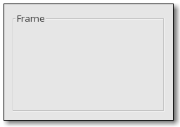

GtkFrame也是GtkContainer的子類，可以容納其它Widget，並呈現出以下的外觀（圖片取自 GtkFrame 文件）：

要建立GtkFrame，並將元件置於其中，基本上是如下的程式碼片段：
GtkWidget *gtkFrame = gtk_frame_new("GtkHButtonBox");
gtk_container_add(GTK_CONTAINER(gtkFrame), hbuttonBox);
gtk_container_add(GTK_CONTAINER(gtkFrame), hbuttonBox);
GtkButtonBox則是一個可以容納按鈕群組的不可視版面配置元件，您可以使用gtk_hbutton_box_new()函式建立一個水平置放按 鈕的GtkButtonBox，或是使用gtk_vbutton_box_new()建立一個垂直建立按鈕的GtkButtonBox，在建立 GtkButtonBox之後，您可以使用gtk_button_box_set_layout()來設置按鈕的排列方式，依給定的 GtkButtonBoxStyle進行設定：
typedef enum
{
GTK_BUTTONBOX_DEFAULT_STYLE,
GTK_BUTTONBOX_SPREAD,
GTK_BUTTONBOX_EDGE,
GTK_BUTTONBOX_START,
GTK_BUTTONBOX_END,
GTK_BUTTONBOX_CENTER
} GtkButtonBoxStyle;
{
GTK_BUTTONBOX_DEFAULT_STYLE,
GTK_BUTTONBOX_SPREAD,
GTK_BUTTONBOX_EDGE,
GTK_BUTTONBOX_START,
GTK_BUTTONBOX_END,
GTK_BUTTONBOX_CENTER
} GtkButtonBoxStyle;
下面的程式碼使用了GtkBox、GtkButtonBox及GtkFrame進行了較複雜的版面配置，要注意的是元件加入的順序，以及設定不同GtkButtonBoxStyle後的呈現方式：
- layout_demo.c
#include <gtk/gtk.h>
// 建立水平按鈕群組
GtkWidget* createHButtonBoxWithFrame() {
int i;
GtkWidget *hbuttonBox = gtk_hbutton_box_new();
GtkWidget *gtkFrame = gtk_frame_new("GtkHButtonBox");
gtk_container_add(GTK_CONTAINER(gtkFrame), hbuttonBox);
gtk_button_box_set_layout(GTK_BUTTON_BOX(hbuttonBox),
GTK_BUTTONBOX_SPREAD);
for(i = 0; i < 4; i++) {
gtk_box_pack_start(GTK_BOX(hbuttonBox),
gtk_button_new_with_label("HBtn"), TRUE, TRUE, 5);
}
return gtkFrame;
}
// 建立垂直按鈕群組
GtkWidget* createVButtonBoxWithFrame() {
int i;
GtkWidget *vbuttonBox = gtk_vbutton_box_new();
GtkWidget *gtkFrame = gtk_frame_new("GtkVButtonBox");
gtk_container_add(GTK_CONTAINER(gtkFrame), vbuttonBox);
gtk_button_box_set_layout(GTK_BUTTON_BOX(vbuttonBox),
GTK_BUTTONBOX_START);
for(i = 0; i < 4; i++) {
gtk_box_pack_start(GTK_BOX(vbuttonBox),
gtk_button_new_with_label("VBtn"), TRUE, TRUE, 5);
}
return gtkFrame;
}
int main(int argc, char *argv[]) {
GtkWidget *window;
GtkWidget *vbox;
GtkWidget *hbox;
GtkWidget *gtkFrame1, *gtkFrame2;
gtk_init(&argc, &argv);
window = gtk_window_new(GTK_WINDOW_TOPLEVEL);
gtk_window_set_title(GTK_WINDOW(window), "GtkFrame & GtkButtonBox");
gtk_window_set_default_size(GTK_WINDOW(window), 500, 400);
// 最外層為GtkFrame，當中包括GtkVBox
vbox = gtk_vbox_new(TRUE, 5);
gtkFrame1 = gtk_frame_new("GtkVBox");
gtk_container_add(GTK_CONTAINER(gtkFrame1), vbox);
// 建立水平按鈕群組，加入GtkVBox
gtk_box_pack_start(GTK_BOX(vbox),
createHButtonBoxWithFrame(), TRUE, TRUE, 5);
// 建立GtkFrame，當中包括GtkHBox，加入GtkVBox中
hbox = gtk_hbox_new(TRUE, 5);
gtkFrame2 = gtk_frame_new("GtkHBox");
gtk_container_add(GTK_CONTAINER(gtkFrame2), hbox);
gtk_box_pack_start(GTK_BOX(vbox), gtkFrame2, TRUE, TRUE, 5);
// 分別建立兩個垂直按鈕群組，加入GtkHBox中
gtk_box_pack_start(GTK_BOX(hbox),
createVButtonBoxWithFrame(), TRUE, TRUE, 5);
gtk_box_pack_start(GTK_BOX(hbox),
createVButtonBoxWithFrame(), TRUE, TRUE, 5);
gtk_container_add(GTK_CONTAINER(window), gtkFrame1);
g_signal_connect(GTK_OBJECT(window), "destroy",
G_CALLBACK(gtk_main_quit), NULL);
gtk_widget_show_all(window);
gtk_main();
return 0;
}執行的成果如下所示：